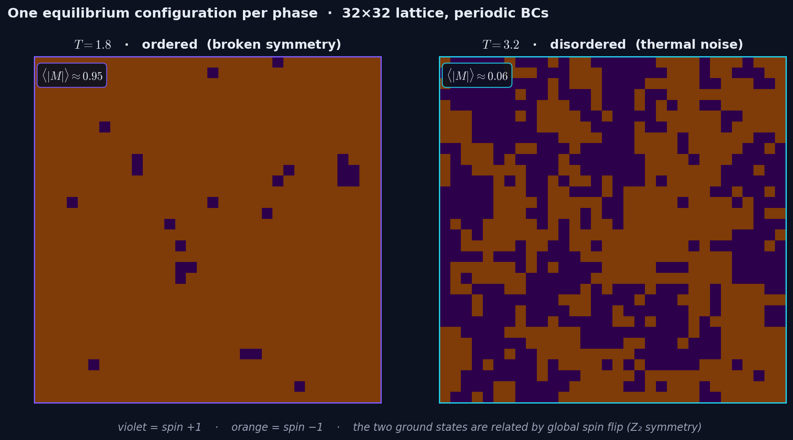
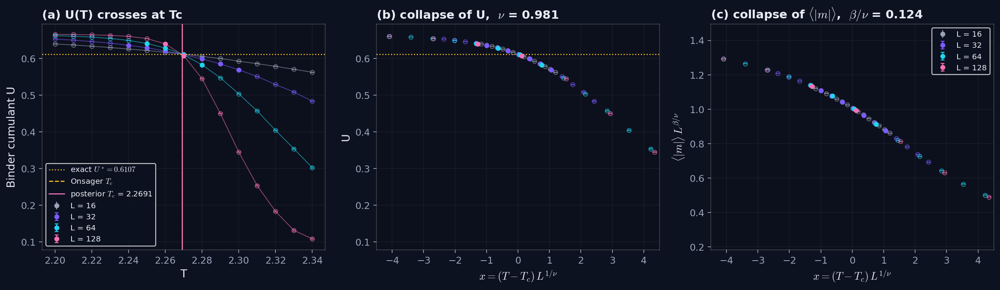

Monte Carlo simulation of the 2D Ising model and Bayesian inference of its critical point, checked against Onsager's exact solution. A single-lattice fit fails in an instructive way; finite-size scaling recovers \(T_c\), \(\nu\) and \(\beta\).


The same Metropolis sampler runs live on Hugging Face Spaces: set a temperature and a lattice size, watch the spins order or melt, and trace \(M(T)\) across \(T_c\).
First load can take 20–40 s while the Space starts.